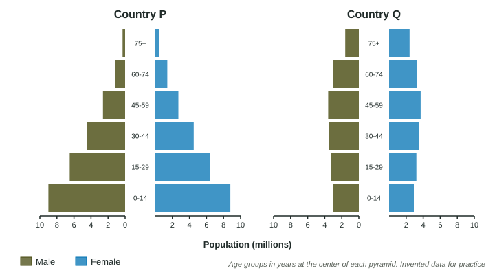

The question
Name: ______________________ Date: ____________ Age structure and survival in Countries P and Q (10 points)
Data
Countries P and Q
| Age (years) | Country P survivors | Country Q survivors |
|---|---|---|
| 0 | 1,000 | 1,000 |
| 1 | 940 | 996 |
| 15 | 880 | 992 |
| 45 | 700 | 960 |
| 75 | 250 | 640 |

(a) Using the population pyramids, describe the shape of each country’s age structure diagram, including data from the figure. [2 points]
(b) Make a claim about which country’s population is likely to grow faster over the next 30 years, and justify your claim with data from the figure. [2 points]
(c) Using the survivorship table, (i) calculate the percent of babies in Country P who die before age 1, and (ii) identify which country’s survivorship is closer to a Type I curve and describe the evidence. [3 points]
(d) Country P is improving clean water and vaccines for children. Explain how a fall in infant mortality is likely to affect Country P’s total fertility rate over the following decades. [2 points]
(e) Describe one likely economic or social consequence of Country Q’s age structure over the next 20 years. [1 point]